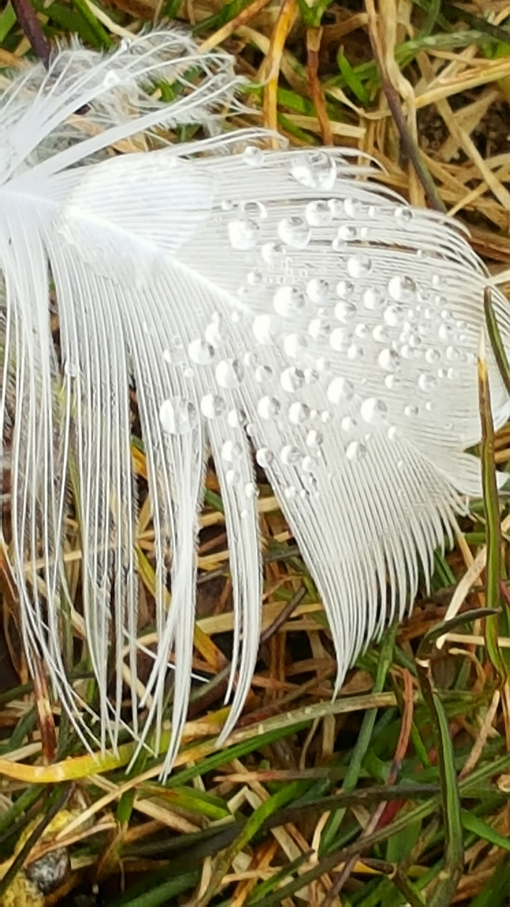
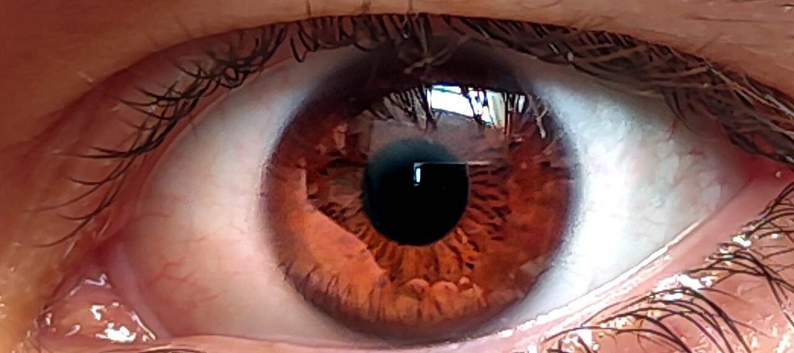
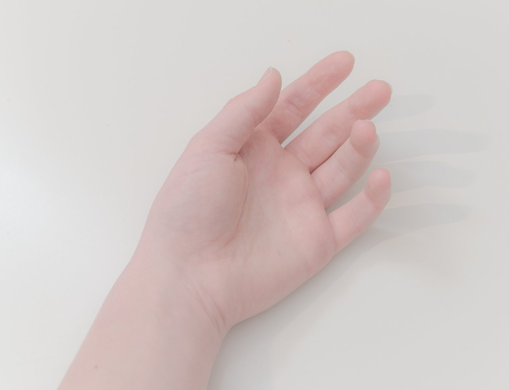
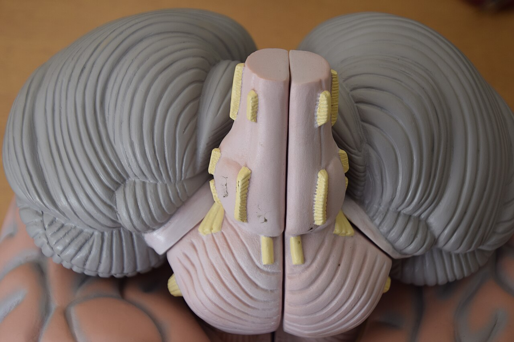
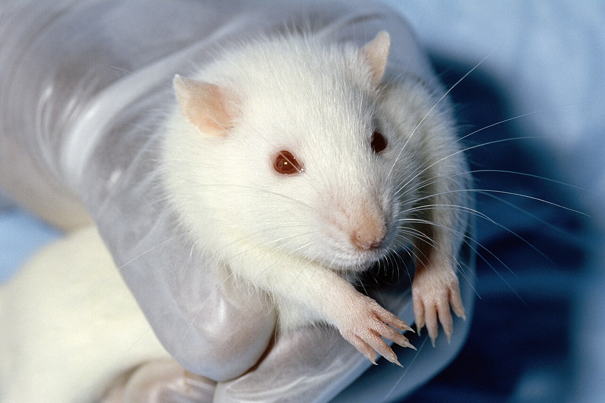
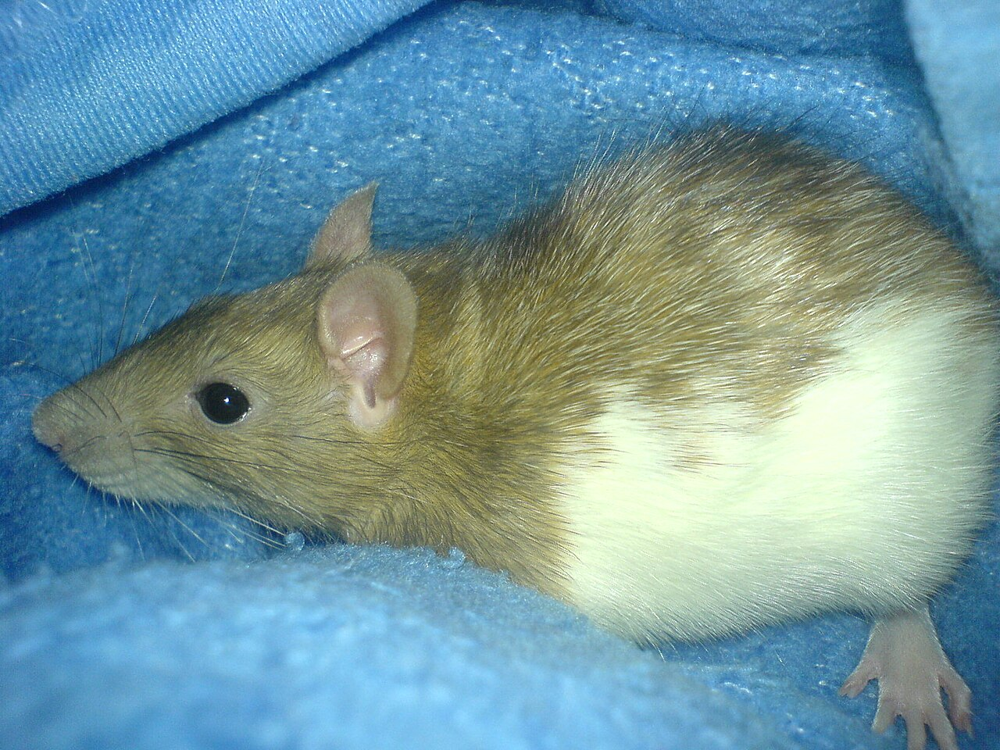

イギリス・ロンドンの大学の研究室。16人の参加者が目を閉じ、右の手のひらを上に向けて座りました。使うのは2台のロボットです。1台は、参加者が左手で動かすレバー。もう1台は、その動きをまねて、先につけたスポンジで右の手のひらをなでます。1999年に発表された実験です。
だれかにわきの下をくすぐられると、笑いが止まりません。ところが、自分の指で同じようにくすぐっても、なんともありません。指の動きも、さわられる皮膚も同じなのに、なぜでしょう。研究チームはこの装置に、ある小さな仕掛けを入れていました。

自分の指でわきをくすぐっても、少しも笑えません。脳が自分の動きの結果を先回りして打ち消すしくみを流れ図で、ロボットで「ずれ」を入れた実験をグラフで、2種類のくすぐったさを表で見ていきます。ネズミも、くすぐると笑うのでしょうか？
イギリス・ロンドンの大学の研究室。16人の参加者が目を閉じ、右の手のひらを上に向けて座りました。使うのは2台のロボットです。1台は、参加者が左手で動かすレバー。もう1台は、その動きをまねて、先につけたスポンジで右の手のひらをなでます。1999年に発表された実験です。
だれかにわきの下をくすぐられると、笑いが止まりません。ところが、自分の指で同じようにくすぐっても、なんともありません。指の動きも、さわられる皮膚も同じなのに、なぜでしょう。研究チームはこの装置に、ある小さな仕掛けを入れていました。
自分の動きは、脳が感触を予測して弱めるから。
体を動かすたびに、服がこすれ、指どうしがふれます。これを全部同じ強さで感じていたら、背中に虫が止まったような、外からの大事な合図を聞き逃してしまいます。
そこで脳は、自分が起こした感覚と、外から来た感覚を分けています。手がかりは、筋肉へ「動け」と命令を出すときに残しておく命令の写しです。専門用語で「遠心性（えんしんせい）コピー」といいます。
脳はこの写しを「内部モデル」に送ります。いわば、動きの結果を計算する予報係です。予報係が「この動きなら、こんな感触が来るはず」と知らせ、実際の感覚と照らし合わせます。予報どおりなら、その感覚は弱められます。
このしくみは、目でも確かめられます。19世紀のドイツの学者ヘルムホルツが注目した現象です。自分で目玉を動かしても、景色は止まって見えます。ところが、まぶたの上から指でそっと目を押すと（強く押さないでください）、景色が揺れて見えるのです。
目の筋肉で動かしたときは、脳が命令の写しから景色のずれを予測し、差し引いています。指で押したときは命令が出ないので予測もなく、ずれがそのまま「揺れ」として見えます。

自分でくすぐれないことを、最初に実験で確かめたのは、1971年に科学誌『ネイチャー』に載ったイギリスの研究とされます。足の裏をなでる装置を、実験者が動かすと、本人が動かすよりくすぐったく感じられました。
面白いのは、もう1つの条件です。実験者が本人の腕に手を添えて、装置を動かしました。動いたのは自分の腕でも、「動け」と命令したのは他人です。このときのくすぐったさは、自分で動かしたときより強く、他人にされたときより弱い、中間でした。
冒頭のロンドンの実験は、この考えをさらに確かめたものです。サラ＝ジェイン・ブレイクモアらのチームが、2台のロボットのあいだに仕掛けを入れました。左手の動きがスポンジに伝わるまでに、0.1秒、0.2秒、0.3秒のわずかな遅れを入れたのです。

もう1つの仕掛けは、向きのずれです。左手を動かす向きと、スポンジが動く向きのあいだに、30〜90度の角度をつけました。くすぐったさは、0（まったくない）から10（とても強い）の数字で答えてもらいます。
結果は予想どおり。ずれが大きいほど、くすぐったさは強まりました。遅れなら0.2秒、向きなら90度で、ロボットだけが動かしたとき（他人にされたのと同じ状態）と差がなくなります。
手のひらをなでるスポンジの動きは、どの条件でも同じです。変えたのは、左手の動きとのずれだけでした。予測とのずれが大きくなるほど、脳は感覚を打ち消しきれなくなる。くすぐったさを生むのは、自分の動きからの予測とずれることだったのです。
では、予報係は脳のどこにいるのでしょう。ブレイクモアらは1998年、fMRI（脳の活動を、血の流れの変化から画像にする装置）で6人の脳を調べました。皮膚の感覚を受けとる部分は、自分でさわったときより、他人にさわられたときのほうが活発でした。
注目されたのは、後頭部の下にある小脳です。小脳は、体の動きをなめらかに調節する場所として知られています。手のひらにふれる動きをしたときは、何にもふれない同じ動きをしたときより、小脳の活動が小さくなっていました。動きは同じで、違うのは感触が返ってくるかどうかだけです。
そこでチームは、小脳が動きの結果を予測し、打ち消しの合図を出しているのではないかと考えました。2001年には PET（弱い放射線を出す薬で、脳のはたらく場所を写す装置）で、予測とのずれの大きさと小脳の活動に関係があることも報告しています。
ただ、どちらも6人の研究です。小脳だけで説明がつくかは、まだ確かめられている途中です。

この予測のしくみは、心の病気の研究にもつながっています。2000年、同じ研究グループは小さな研究で、統合失調症などの患者さんに、自分でさわったときと、他人にさわられたときの感じ方をくらべてもらいました。
幻聴（ほかの人には聞こえない声が聞こえる）や、「自分の動きや考えが、だれかに操られている」と感じる症状のある人では、自分でさわっても感覚が弱まりにくい傾向が見られました。一方、同じ病気でも、こうした症状のない人では、ほかの人と同じように弱まりました。
チームは、病名より症状と関係していると考えています。自分の動きを「自分のもの」と見分けるしくみが、うまくはたらいていないのかもしれません。とはいえ、くすぐったさだけで病気はわかりません。自分でさわってくすぐったく感じる日があっても、それだけで心配する必要はないのです。
実は、自分でも起こせる「くすぐったさ」もあります。羽根で腕をそっとなでると、ゾワゾワしますね。1897年、アメリカの心理学者ホールらは、くすぐったさを2つに分け、ギリシャ語にちなんだ名前をつけました。
1つは、虫がはうような軽い刺激で起きる「クニスメシス」（ゾワゾワ型）。もう1つは、わきやおなかを強めにくり返し押されて起きる「ガーガレシス」（笑う型）です。自分の予測で打ち消されてしまうのは、主に笑う型のほうだと考えられています。
笑う型のくすぐったさは、人だけのものではないようです。2016年、ドイツのフンボルト大学ベルリンのシンペイ・イシヤマとミヒャエル・ブレヒトが、『サイエンス』にネズミ（ラット）をくすぐる研究を発表しました。
くすぐられたネズミは、人の耳には聞こえない超音波で「笑い声」のような鳴き声を出しました。鳴き声から判断すると、くすぐったいのは、おなかと足の裏。研究者の手を追いかけて遊んだり、うれしそうに跳ねたりもしました。
脳も調べられています。皮膚の感覚を受けとる脳の部分の神経細胞を電気で刺激すると、くすぐらなくても鳴き声が出ました。
一方、ネズミを高い台の上に乗せて不安にさせると、くすぐっても鳴かなくなります。くすぐったさは、気分にも左右されるのです。


ロボットの実験で、0.1〜0.3秒の遅れに気づかなかった参加者の数。ほとんどの人が遅れに気づかないまま、くすぐったさの評価は上がったBlakemore ほか、1999年
くすぐられた若いネズミが出す「笑い声」の高さ。1秒に5万回ふるえる音で、人の耳に聞こえるのは、およそ2万回（20kHz）までフンボルト大学ベルリン、2016年
ホールらが、くすぐったさを2種類に分けた論文を発表した年。129年前のことAmerican Journal of Psychology、1897年
自分の動きの感覚を弱めるしくみは、くすぐったさ以外にも顔を出します。2003年、ロンドンの同じ研究グループの実験です。2人1組の6組に、機械を通して相手の指を交互に押してもらい、「いま押されたのと同じ強さで押し返して」と頼みました。
ところが、押し合うたびに力は強くなり、1回ごとに平均で約38%も増えていきました。2人とも「同じ強さで返した」と感じていたと考えられます。自分の指で押す力は、脳が予測して弱めて感じるので、相手から受けた力に追いつこうと、つい強く押してしまうのです。
別の12人には、機械で押された力を再現してもらいました。指で直接押すときは強すぎ、レバーで押すときはずっと正確に返せました。
やられたらやり返すうちに、けんかの押し合いがだんだん激しくなる。そのわけの1つとして、この実験が紹介されることもあります。
次にだれかとふざけて押し合ったら、少し力を抜いてみてください。あなたが「同じくらい」と感じた力は、相手には少し強く届いているかもしれません。